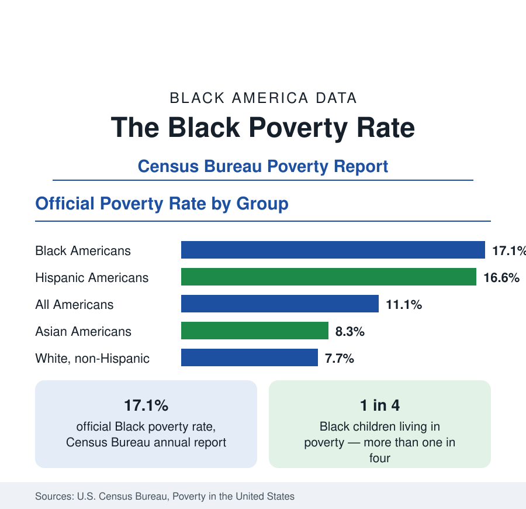

Black Census
The Black Poverty Rate: Levels, Children, and the Long Trend
The official Black poverty rate is 17.1 percent — against 11.1 percent nationally and 7.7 percent for non-Hispanic White Americans. How poverty is measured and what the data show.

The official poverty rate for Black Americans stands at 17.1 percent in the Census Bureau's annual poverty report — roughly one in six Black people living below the federal poverty line, against 11.1 percent of all Americans and 7.7 percent of non-Hispanic White Americans. Poverty statistics are among the most contested in public debate, largely because they are quoted without their definitions. This article states the definitions, reports the levels by group, age, and family type, and describes the long trend of the Black poverty rate, which has fallen from nearly one in three in the early 1990s to the lowest levels in the history of the series.
How Poverty Is Measured
The official measure compares a family's cash income before taxes against a threshold that varies by family size and composition — approximately $31,000 for a family of four in recent reports. The thresholds were set in the 1960s from the cost of a minimum food budget and have been adjusted only for inflation since, which means the official line describes an austere standard: it does not vary by region, and it counts neither tax credits nor non-cash benefits such as food assistance. The Census Bureau also publishes a Supplemental Poverty Measure that does count those resources and subtracts necessary expenses such as childcare and medical costs; the supplemental rate for Black Americans runs somewhat higher than the official rate, and both series are reported in this reference with their measure named.
The Rate by Group and Age
The ordering across groups mirrors the income data in this section. Black Americans record the highest official poverty rate of the major groups at 17.1 percent, followed by Hispanic Americans at 16.6 percent, all Americans at 11.1 percent, Asian Americans at 8.3 percent, and non-Hispanic White Americans at 7.7 percent. Age cuts the figures sharply. Poverty is concentrated among children: more than one in four Black children — a rate around 27 percent — lives in poverty, the highest of any age group, while Black senior poverty runs lower, reflecting the floor that Social Security places under elderly incomes. Working-age adults fall between, and their rate moves most with the business cycle.
Family Structure and Work
Within the Black population, poverty is distributed very unevenly by family type, and the data on this point are unambiguous. Black families maintained by a woman with no spouse present record poverty rates several times those of married-couple Black families, whose rate falls into the single digits — close to the rates of married couples generally. Employment is the other master variable: the large majority of poor Black adults who can work are attached to the labor force at least part of the year, and full-time, year-round Black workers record poverty rates in the low single digits. The statistical story of Black poverty is thus substantially a story of household composition and hours of work, layered over the wage levels documented in the employment section.
The Long Trend
The historical series is the part of the poverty data most often omitted. Black poverty exceeded 40 percent when the official series began in the 1960s, stood near 33 percent in the early 1990s, and has trended downward since, reaching its recorded lows in the most recent reports — falling below 20 percent for the first time, then to the 17 percent range. The improvement has been interrupted by every recession, most sharply by the Great Recession, and partially reversed in individual years, but the direction across three decades is consistent in both the official and supplemental measures. Researchers attribute the decline principally to rising employment and earnings at the bottom of the distribution, expanded tax credits for working families, and the educational gains documented in this reference's education section.
Depth and Duration
Two further measures complete the picture. Deep poverty — income below half the poverty line — affects roughly 8 percent of Black Americans, and it is deep poverty, more than poverty at the margin, that correlates with the hardest outcomes in housing instability and health. Duration matters as well: longitudinal data show that most poverty spells are short, measured in months, while a smaller share of the poor at any moment are in long spells that account for most of the total time spent in poverty. Policy and research treat these as distinct problems — a broad population cycling briefly through low income, and a smaller population in persistent poverty — and the articles in this section on income, employment, and housing keep the distinction in view.
Summarized, the poverty data give the Black economic position its floor: a 17.1 percent official rate, the highest of the major groups, concentrated among children and single-parent families, and standing at the lowest level ever recorded after three decades of decline. Both halves of that sentence are in the data, and this reference reports both.
More in Black Census
The Black Population of the United States: Size, Definitions, and Distribution
The Black population of the United States totals 52.8 million — 15.4 percent of the nation. How the Census Bureau defines and counts the population, and where it lives.
Black Median Household Income in the United States
Black median household income stands at $56,490 in the Census Bureau's annual income report — how the figure is measured, how it compares, and what drives it.
The Black Homeownership Rate: The Gap and Its History
The Black homeownership rate stands at 44.7 percent, against 72.4 percent for White households — a gap wider than when discrimination in housing was legal. The data and its drivers.
Source: U.S. Census Bureau, Poverty in the United States (Current Population Survey, Annual Social and Economic Supplement).